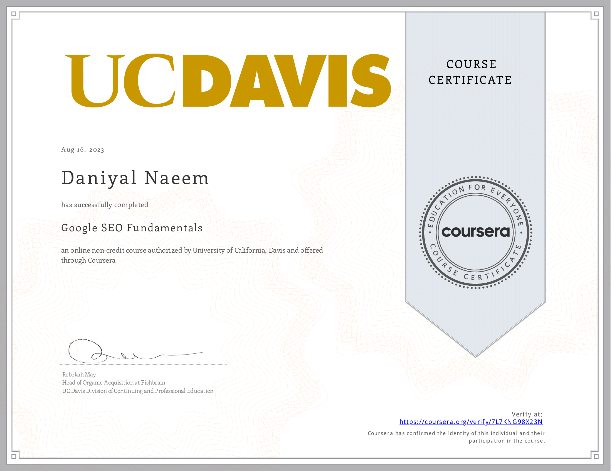

Through the "Analyzing Data in Spreadsheets" course, I gained a profound understanding of transforming raw data into actionable insights. I honed skills in data cleansing, employing functions, and creating visual representations. The course unveiled the power of pivot tables for slicing and dicing data, extracting meaningful patterns. I also learned the art of data validation and collaborative work, ensuring accuracy and efficiency. This newfound proficiency empowers me to make informed decisions, identify trends, and communicate findings effectively. From sorting to advanced calculations, the course's comprehensive curriculum fortified my analytical abilities, positioning me to drive impactful outcomes in diverse data-driven endeavors.
Having completed the Tableau course, I've gained expertise in data visualization and analysis. I can now transform raw data into insightful dashboards, utilizing Tableau's diverse features effectively. From data connection to interactive graphs, I've honed skills to present complex information in an accessible manner. The course covered data preparation, blending, and calculated fields, enabling me to derive meaningful insights. Designing user-centric visualizations and utilizing filters for dynamic interactions are now second nature. This course has not only expanded my technical prowess but also empowered me to make informed decisions based on data-driven observations. I'm now well-equipped to contribute valuable insights to any analytical project.
After completing the 'Data Science for Business' course, I've acquired a profound understanding of how data fuels strategic decisions. Through comprehensive modules, I've mastered data manipulation, predictive modeling, and machine learning techniques. From customer behavior to market trends, I've gained insights that drive smarter business strategies. The course honed my ability to extract actionable insights from complex datasets, empowering me to contribute meaningfully to decision-making. With hands-on experience in analyzing real-world business scenarios, I've become adept at translating data-driven findings into impactful solutions. Equipped with these skills, I'm prepared to bridge the gap between data science and business needs, driving innovation and efficiency in every project I undertake.
Upon successfully completing the 'Digital Marketing' course, I've unlocked a world of strategic online promotion. Throughout the program, I've delved deep into the realms of SEO, social media, email campaigns, and more. The course provided a hands-on experience, allowing me to craft and execute effective digital strategies. I've gained proficiency in deciphering analytics and metrics, enabling me to optimize campaigns for maximum impact. From building a brand's online presence to driving targeted traffic, I've honed skills that directly translate to real-world scenarios. Armed with this knowledge, I'm well-equipped to harness the power of digital platforms, engaging audiences and driving business growth. This course has not only broadened my horizons but also instilled the confidence to navigate and excel in the fast-paced arena of digital marketing.
"Having completed the comprehensive Python programming course, I am now equipped with a versatile skill set that empowers me to tackle a myriad of challenges in the world of coding. Throughout the course, I delved into the intricacies of Python, from its fundamentals to more advanced concepts. Through hands-on projects and practical exercises, I've gained proficiency in designing and implementing solutions using Python. I've honed my ability to automate tasks, analyze data, and develop applications. This newfound proficiency enables me to translate ideas into functioning code effectively. From scripting to data manipulation, the course's encompassing curriculum has enriched my problem-solving abilities, positioning me to excel in diverse programming endeavors. I am excited to leverage my Python skills to drive innovation and efficiency across a spectrum of projects."
Emerging from the 'Intro to ChatGPT' course, I've unlocked the capabilities of an AI-powered language model. Through immersive modules, I've delved into the intricacies of ChatGPT's architecture and its diverse applications. I've honed the skill of crafting human-like interactions, harnessing its potential for tasks ranging from creative writing to problem-solving. The course equipped me with the ability to fine-tune prompts and parameters, tailoring the AI's responses to specific contexts. From casual conversations to professional correspondence, I'm adept at molding ChatGPT's output to suit diverse communication needs. Armed with this knowledge, I'm primed to leverage the power of AI-driven communication, enhancing efficiency and creativity across a multitude of scenarios. This course not only broadened my horizons but also positioned me to be a proficient navigator in the realm of AI-driven language processing
Upon completing the Google SEO Fundamentals course, I've acquired a profound understanding of the intricate world of search engine optimization. Through immersive modules, I've delved into the core principles that underpin effective SEO strategies. From comprehensive keyword research to mastering on-page and off-page optimization techniques, I've gained a versatile skill set that empowers me to enhance online visibility and user experience. The course provided invaluable insights into creating content that resonates with both search engines and human audiences. Armed with this knowledge, I am now well-equipped to strategically boost website rankings and drive organic traffic. I've learned to navigate the ever-changing algorithms while adhering to ethical SEO practices. This course has not only broadened my horizons but also positioned me to be a proficient optimizer in the dynamic digital landscape. With a comprehensive understanding of SEO fundamentals, I am poised to contribute meaningfully to the success of online initiatives, making a tangible impact on digital visibility and engagement.
